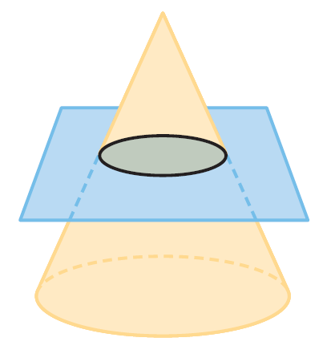
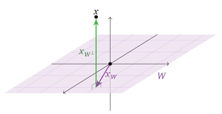
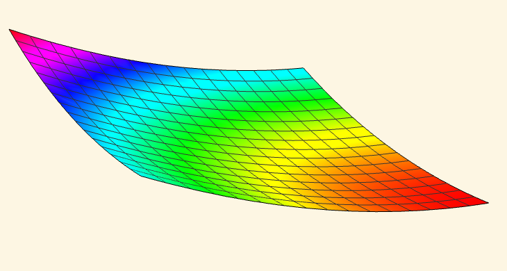
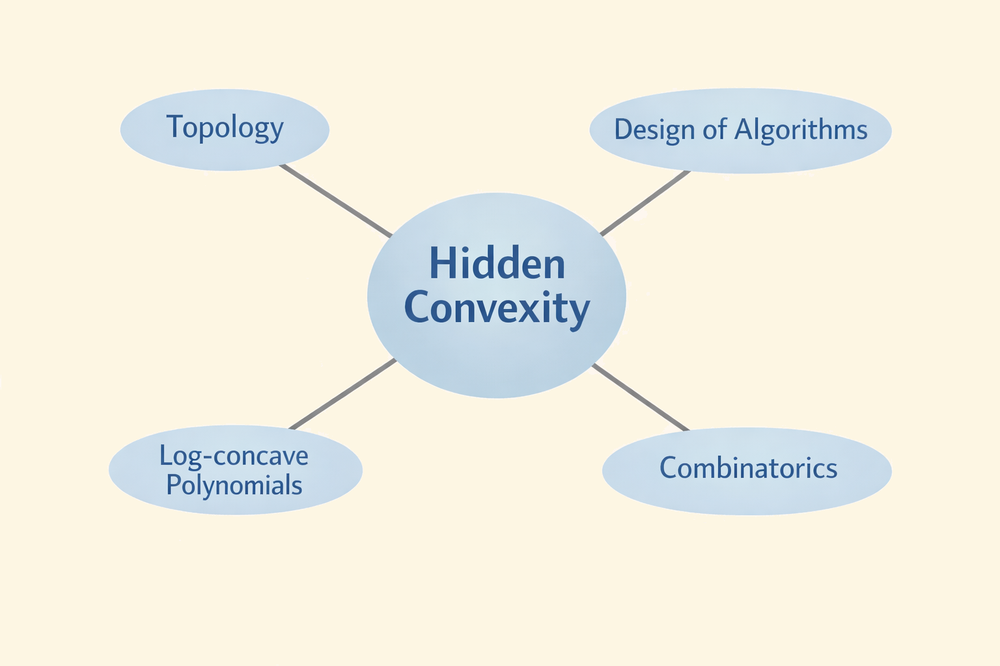
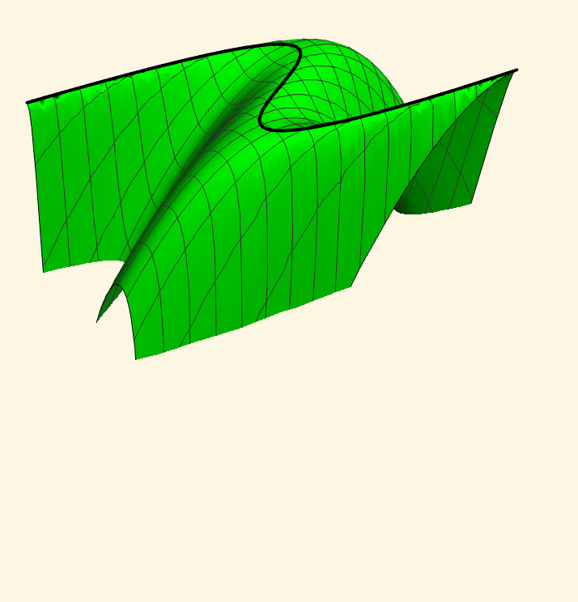
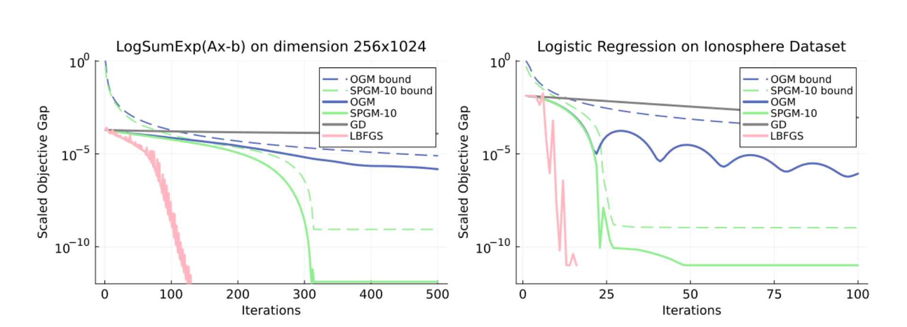

The Surprising Ubiquity of
Convex Optimization
Kevin Shu

Optimization is Everywhere
Robotics

Rosen et al. 2021.
Materials

Serles et al. 2025.
Language Models

Issues with Optimization


Desiderata for Optimizers
- Computationally efficient
- Reliable
- Expressive
- Globally optimal
What is Convex Optimization?
Convex Set - For any $x, y \in C$, and $t \in [0,1]$, \[ tx + (1-t)y \in C. \]
Convex Function - For any $x, y \in \R^d$, and $t \in [0,1]$, \[ f(tx + (1-t)y) \le tf(x) + (1-t)f(y). \]

What is Convex Optimization?
Linear Programs

| $\min$ | $c^{\intercal} x$ |
| s.t. | $Ax = b$ |
| $x \in \R^n_{\ge 0}$ |
Conical Programs
| $\min$ | $c^{\intercal} x$ |
| s.t. | $Ax = b$ |
| $x \in K$ |
e.g. $K$ is PSD cone.
Regression
| $\min$ | $\|Ax - b\|_p$ |
| s.t. | $x \in \R^n$ |
Why Convex Optimization?
- Computationally efficient
- Reliable
- Expressive
- Globally optimal
But not all optimization problems are convex!
We want to solve some problem in engineering or science.

Convex Reformulations
We want to solve some problem in engineering or science.
→
Manifestations of hidden convexity in my work
Manifestations of hidden convexity in my work

Outline of the Talk
- Introduction
- A Topological Framework for Hidden Convexity
- Lagrangian Dual Sections
- Path Tracking Algorithms
- Automatic Design of First-Order Methods
- Long Step Gradient Descent
- Subgame Perfect Gradient Method
- Conclusions and Future Work
Convexifying Optimization Problems with Topology1
1. Lagrangian Dual Sections: A Topological View of Hidden Convexity - V Chandrasekaran, T Duff, J Rodriguez, K Shu
Motivating Example: Attitude Estimation
Probes in deep space need to estimate their orientation.1
1. Wahba, Grace. "A least squares estimate of satellite attitude." SIAM review 7.3 (1965): 409-409.

Two data sources: positions of distant stars and accelerometer estimate .
Attitude Estimation
Goal: Find a rotation satisfying two conditions:
- Transforms an internal star map to observed locations of the stars.
- Is not too far from some fixed rotation matrix.
The set of rotations is called the special orthogonal group $\SO(3)$. \[ \SO(n) = \{X \in \R^{n \times n} : X^{\intercal}X = I, \det(X) = 1\}. \]
Attitude Estimation
Model:
| $\min_X$ | $\|AX - B\|^2$ |
| s.t. | $\|X - X_0\|^2 \le \epsilon$ |
| $X \in \SO(n)$ |
$A$ and $B$ represent the observed/stored star locations.
$X_0$ is estimated rotation matrix.
Algebra shows that objective is equivalent to $\tr(B^{\intercal}A X)$ and first constraint is equivalent to $\tr(I - X_0^{\intercal}X) \le \epsilon$.
Hidden Convexity and $\SO(n)$
Theorem (RSW 2024)
If $A_0, A_1 \in \R^{n\times n}$ for $n > 2$, then \[ \big\{(\tr( A_0^{\intercal} X), \tr( A_1^{\intercal} X)) : X \in \SO(n)\big\} \subseteq \R^2\] is convex.
Means we can apply convex optimization to the constrained problem.
Many fundamental optimization problems can be expressed as constrained problems over nonconvex sets (e.g. manifolds, algebraic varieties).
Examples:
Quadratically Constrained Quadratic Programming (QCQP)
Combinatorics, Power Systems
Stiefel Manifold Optimization
Robotics, Computer Vision
Inverse Eigenvalue Problems
Spectral Graph Theory, Network Science, Sturm-Liouville Equations

Boyd's embedding of $\R\mathbb{P}^2$.
Constrained Optimization
Many fundamental problems expressed as constrained optimization problems over a domain $M$ (e.g. a manifold, an algebraic variety, $\R^d$).
Formulation
\[ \max \{f_0(x) : f_1(x) = c_1, \dots, f_k(x) =c_k, x \in M\}, \]
for topological space $M$ and $f : M \rightarrow \R^{k+1}$.
Constrained Optimization
Such problems are typically NP-hard. Convex optimization gives bounds on the optimal value.
Formulation
\[ \max \{f_0(x) : f_1(x) = c_1, \dots, f_k(x) =c_k, x \in M\}, \]
for topological space $M$ and $f : M \rightarrow \R^{k+1}$.
Constrained Optimization
Formulation
\[ \max \{f_0(x) : f_1(x) = c_1, \dots, f_k(x) =c_k, x \in M\}, \]
for some set $M$ and a function $f : M \rightarrow \R^{k+1}$.
Reformulation in terms of the image
\[ \max \{y_0 : y_1 = c_1, \dots, y_k =c_k, y \in f(M)\}, \]
for some set $M$ and a function $f : M \rightarrow \R^{k+1}$.
Constrained Optimization
Formulation
\[ \max \{f_0(x) : f_1(x) = c_1, \dots, f_k(x) =c_k, x \in M\}, \]
for some set $M$ and a function $f : M \rightarrow \R^{k+1}$.
Convex Relaxation
\[ \max \{y_0 : y_1 = c_1, \dots, y_k =c_k, y \in \color{red}{\text{conv}(}f(M)\color{red}{)}\}, \]
for some set $M$ and a function $f : M \rightarrow \R^{k+1}$.
When are these two optimization problems equivalent?
Tightness of Convex Relaxations
If $M$ is a topological space (e.g. a manifold, an algebraic variety, $\R^d$), and $f : M \rightarrow \R^{k+1}$ is continuous, when is the convex relaxation tight?
Tightness of Convex Relaxations
If $M$ is a topological space (e.g. a manifold, an algebraic variety, $\R^d$), and $f : M \rightarrow \R^{k+1}$ is continuous, when is the convex relaxation tight?
We can give this an answer in terms of the Lagrangian $$ \mathcal{L}(\lambda, x) = \langle \lambda, f(x)\rangle.$$
Associate for each $\lambda \in \R^{k+1}$ the optimization problem of finding $$ \underset{x\in M}{\argmax}\; \mathcal{L}(\lambda, x)$$
How do the maximizers depend on the choice of Lagrange multiplier $\lambda$?
Tightness of Convex Relaxations
If $M$ is a topological space (e.g. a manifold, an algebraic variety, $\R^d$), and $f : M \rightarrow \R^{k+1}$ is continuous, when is the convex relaxation tight?
How do the maximizers of $\mathcal{L}(\lambda, x) = \langle \lambda, f(x)\rangle$ depend on the choice of Lagrange multiplier $\lambda$?
Definition
A Lagrangian dual section for $f$ consists of a continuous function $D : \R_{\ge 0} \times \R^k \rightarrow M$ so that for all $\lambda$, \[ D(\lambda) \in \underset{x \in M}{\argmax}\; \L(\lambda,x). \]
That is, $D(\lambda)$ maximizes $\L(\lambda,x)$ for all $\lambda \in \R_{\ge 0} \times \R^k$.
Tightness of Convex Relaxations
If $M$ is a topological space (e.g. a manifold, an algebraic variety, $\R^d$), and $f : M \rightarrow \R^{k+1}$ is continuous, when is the convex relaxation tight?
Theorem (CDRS 2025)
Suppose that there is a Lagrangian dual section for $f$. Then for any $c \in \R^k$, \[ \max \{f_0(x) : f_1(x) = c_1, \dots, f_k(x) = c_k, x\in M\} = \] \[ \max \{y_0 : y_1 = c_1, \dots, y_k = c_k, y \in \color{red}{\conv}(f(M))\}. \]
Tightness of Convex Relaxations
Recovers a wide range of results with a unified proof
- O. Toeplitz, "Das algebraische Analogon zu einem Satze von Fejér," Mathematische Zeitschrift (1918)
- F. Hausdorff, "Der wertvorrat einer bilinearform," Mathematische Zeitschrift (1919)
- T.-Y. Tam, “Kostant’s convexity theorem and the compact classical groups,” Linear and Multilinear Algebra (1997)
- C.-K. Li and T.- Y. Tam, “Numerical ranges arising from simple lie algebras,” Canadian Journal of Mathematics (2000)
- E. Gutkin, E. A. Jonckheere, and M. Karow, “Convexity of the joint numerical range: Topological and differential geometric viewpoints,” Linear Algebra and its Application (2004)
- Mengmeng Song and Yong Xia. Linear programming on the Stiefel manifold. SIAM Journal on Optimization (2024)
An Example for Stiefel Manifold
Stiefel manifold - orthogonal projections
\[\St^{n,m} = \{X \in \R^{n\times m} : X^{\intercal}X = I\}\]
Theorem (CDRS 2025)
If $A_0, \dots, A_k$ span a linear subspace of $\R^{n\times m}$ containing no nonzero singular matrix (i.e. matrix of rank $< m$), then \[ \max \{\langle A_0, X\rangle : \langle A_1, X\rangle = c_1, \dots, \langle A_k, X\rangle = c_k, X \in \St^{n,m} \}=\]
\[ \max \{\langle A_0, X\rangle : \langle A_1, X\rangle = c_1, \dots, \langle A_k, X\rangle = c_k, \color{red}{\sigma_{max}(X) \le 1}\}.\]
Similar results in the context of QCQPs, inverse eigenvalue problems, and more.
Some Mathematical Connections
-
Representations of Clifford algebras
-
Vector bundles on spheres
Orbits of Lie group actions
-
Kostant convexity theorem
-
Von Neumann-Wigner noncrossing theorem
From Continuity to Path-tracking Algorithms
From Continuity to Path-tracking Algorithms
Does the existence of a Lagrangian dual section $D(\lambda)$ imply fast algorithms?
Knowing $D(\lambda)$ for all $\lambda$ facilitates the ellipsoid algorithm.
Goal: Find $D(\lambda)$ for arbitrary $\lambda$.

From Continuity to Path-tracking Algorithms
Assume there is a Lagrangian dual section $D$, and that we know $D(\lambda_0)$ for fixed $\lambda_0 \in \R^{k+1}$.
Try a path-tracking approach to find $D(\lambda)$ for $\lambda \neq \lambda_0$.
Idea: Compute $D((1-t)\lambda + t\lambda_0)$ for $t \in [0,1]$ by slowly changing $t$.
From Continuity to Path-tracking Algorithms
Instantiating this idea on a computer requires notions from Riemannian geometry. We will assume
- $M$ is a Riemannian manifold.
- $f$ is smooth.
Theorem (CDRS 2025) - Informal
Assume (1) and (2), and that there is a Lagrangian dual section $D$. Given the value of $D(\lambda_0)$ for some $\lambda_0 \in \R^{k+1}$, there is a path tracking algorithm which outputs $D(\lambda)$ up to accuracy $\epsilon$ in $O\left(\frac{1}{\epsilon}\right)$ evaluations of $f$ and its derivatives.
The big-$O$ suppresses dependence on condition numbers related to $\mathcal{L}$.
Unbalanced Procrustes Problems
Given an $n$-dimensional point cloud $A$, and an $m$ dimensional point cloud $B$ with $n > m$, find a rotation/projection that best maps $A$ to $B$.
$$ \min_{X^{\intercal}X = I, X \in \R^{n \times m}} \|AX - B\|^2.$$
A 3D model with different rotations/projections

A fixed noisy projection
Unbalanced Procrustes Problems
Artificially view this as a Lagrangian problem by introducing $f:\St^{n,m} \rightarrow \R^2$ with \[f(X) = (\langle A^{\intercal}B, X\rangle, \|AX - B\|^2).\]
The Lagrangian optimization problems then look like \[ \underset{X\in \St^{n,m}}{\argmax}\; \lambda_0 \langle A^{\intercal}B, X\rangle + \lambda_1 \|AX - B\|^2. \] when $\lambda_1 = 0$, this is easy to solve. When $\lambda_0 = 0$, this is the UPP.
Unbalanced Procrustes Problems
Theorem (CDRS 2025)
If $A \in \R^{d \times 3}$ and $B \in \R^{d \times 2}$ satisfy certain explicit inequalities, then the function \[ f(X) = (\langle A^{\intercal}B, X\rangle, \|AX - B\|^2). \] has a Lagrangian dual section.
Roughly 95% of uniformly randomly chosen $A$ and $B$ satisfy these inequalities.
Unbalanced Procrustes Problems

Summary
- Topological properties of the Lagrangian imply convexity
- Globally optimal path tracking algorithms
Outline of the Talk
- Introduction
- A Topological Framework for Hidden Convexity
- Lagrangian Dual Sections
- Path Tracking Algorithms
- Automatic Design of First-Order Methods
- Long Step Gradient Descent
- Subgame Perfect Gradient Method
- Conclusions and Future Work
Automatic Design of Algorithms1, 2, 3
1. Accelerated objective gap and gradient norm convergence for gradient descent via long steps (INFORMS JOC, 2024)
2. Composing optimized stepsize schedules for gradient descent(MOR, 2025)
3. Beyond Minimax Optimality: A Subgame Perfect Gradient Method (In revision at Math Prog, 2025)
All joint with Alex Wang and Ben Grimmer
First-Order Methods
Goal: Minimize functions $f : \R^d \rightarrow \R$.
Input: A black box that outputs the values $f(x)$ and $\nabla f(x)$ at points of our choosing.
First-order methods: Algorithm for choosing query points $x_0, \dots, x_N$.
We will be focused on analyzing performance on convex functions with $L$-Lipschitz gradients ($L$-smooth convex functions).

First Order Methods
Gradient Descent
Accelerating Gradient Descent
Gradient descent sets \[x_i = x_{i-1} - h_i\nabla f(x_{i-1}).\]
Standard step size choice is $h_i = \frac{1}{L}$, converging at a rate of $O(1/n)$.
Much work treats constant step size case, all converging at $O(1/n)$ rate.
- Y. Drori and M. Teboulle. (2014)
- T. Rotaru, F. Glineur, and P. Patrinos. (2024).
- J. Kim. (2024)
Our step sizes
Can gradient descent be asymptotically faster on convex functions just by tuning the step sizes?
Yes! With nonmonotonic, unbounded size, and typically asymmetric step sizes.
First work: (AP 2024) and (GSW 2024).
Our step sizes
Our latest result:
Theorem (GSW 2024)
There is a dynamic program for finding an optimized* sequence of a sequence of $n$ step sizes achieving a worst case rate of convergence of $O(1/n^{1.27})$.

*conjectured to be minimax optimal amongst gradient descent methods.
Simultaneous with Jiang and Zhang.
Our step sizes - Intuition
Two extreme functions:
$f(x) = \frac{L}{2}x^2$
$f(x) = \begin{cases} L\left(|x|-\frac{1}{2}\right) \text{ if }|x| > 1\\ \frac{L}{2}x^2 \text{ otherwise}\end{cases}$
Optimal step sizes balance performance on these two functions.
How do we analyze these algorithms formally?
Analysis of Algorithms via Convex Optimization
Performance Estimation Problems
For worst case analysis, need to answer a dual question.
For which function $f$ does the algorithm achieve its worst performance?
This can be solved over $L$-smooth convex functions with convex optimization! (DT 2012).
Performance Estimation Problems
Formally, define error metric
\[ \SUBOPT(\text{Alg},f) = \frac{f(x_N) - f_{min}}{\|x_0 - x_{\star}\|^2}? \]
And optimization problem
| $\max_f$ | $\SUBOPT(\text{Alg},f)$ |
| s.t. | $f$ is $L$-smooth and convex. |
Solve this by reformulating as a convex program via interpolation conditions (THG 2017).
We give explicit dual solutions to this convex program to prove the convergence rates of our step size sequences.
Minimax Optimality
A first-order algorithm is minimax optimal for some class of algorithms $\mathcal{A}$ if its worst case suboptimality is minimized in that class, i.e. equal to
| $\min_{\text{Alg} \in \mathcal{A}}$ |
$\max_f$ | $\SUBOPT(\text{Alg}, f)$ |
| s.t. | $f$ is $L$-smooth and convex. |
We conjecture the step sizes discovered in (GSW 2025) are minimax optimal amongst all gradient descent methods.
Earlier work in (KF 2016) are minimax optimal amongst all first-order methods.
Is minimax optimality the best guarantee a first-order method can provide?
Subgame Perfect
Subgame Perfect
An algorithm is subgame perfect if for any first order history $\mathcal{H} = (x_i, f(x_i), \nabla f(x_i))_{i=0}^n$, it guarantees $\SUBOPT \le \tau$, where
| $\tau(\mathcal{H}) = \min_{\text{Alg} \in A(\mathcal{H})}$ |
$\max_{f \in F(\mathcal{H})}$ | $\SUBOPT(\text{Alg}, f)$ |
| s.t. | $f$ is $L$-smooth and convex. |
Here, $A(\mathcal{H})$ are the algorithms consistent with $\mathcal{H}$
$F(\mathcal{H})$ are the $L$-smooth convex functions consistent with $\mathcal{H}$
Subgame Perfect Gradient Method
Theorem (GSW 2025)
There is a subgame perfect gradient method that runs in polynomial time per iteration.
Subgame Perfect Gradient Method
Key ideaIn each iteration, solve the worst-case function optimization problem.
| max | $\SUBOPT'$ |
| s.t. | $f$ is $L$-smooth and convex. |
| For each $i < n$, | $f(x_i)$, $\nabla f(x_i)$ are fixed. |
$\SUBOPT'$ is a slight modification of $\SUBOPT$.
This can be reformulated as a second order cone program and solved in $O(n^{3.5} + dn)$ time, where $n$ is the number of iterations.
Subgame Perfect Gradient Method
Summary
Convex optimization can be used to design first-order algorithms (for convex optimization)
Game theoretic perspective leads to faster convergence.
Conclusions and Future Work
Topology and Optimization
Deepen connections between topology and optimization.
- Approximate convexity - Does approximate continuity for Lagrangian maximizers imply approximate convexity (small integrality gaps)?
-
Quantitative homotopy theory
Projection Simplicity
Lifting approaches are central to convex optimization. Extension complexity quantifies this.
Projection simplicity - can we understand when low dimensional projections are simpler to optimize over?
- In polytope case, interesting examples coming from zonotopes. Possible connections to matroid polytopes?
Algorithm Design via Convex Relaxations
Designing algorithms requires proving that there are no instances where the algorithm fails.
Convex relaxations bounded the possible bad instances for first order algorithms.
- Can we apply this methodology to combinatorial algorithms e.g. sorting networks?
References
Topology
- Hidden convexity, optimization, and algorithms on rotation matrices - A Ramachandran, K Shu, AL Wang (MOR, 2024)
- Lagrangian Dual Sections: A Topological View of Hidden Convexity - V Chandrasekaran, T Duff, J Rodriguez, K Shu (In Submission, 2025)
First-Order Methods
- Accelerated objective gap and gradient norm convergence for gradient descent via long steps - B Grimmer, K Shu, AL Wang (INFORMS JOC, 2024)
- Composing optimized stepsize schedules for gradient descent - B Grimmer, K Shu, AL Wang (MOR, 2025)
- Beyond Minimax Optimality: A Subgame Perfect Gradient Method - B Grimmer, K Shu, AL Wang (In Revision - Math Prog, 2025)
Hyperbolic Polynomials
- Hyperbolic Relaxation of k-Locally Positive Semidefinite Matrices - G Blekherman, S Dey, K Shu, S Sun (SIOPT, 2022)
- Linear Principal Minor Polynomials: Hyperbolic Determinantal Inequalities and Spectral Containment - G Blekherman, M Kummer, R Sanyal, K Shu, S Sun (IMRN, 2022)
- Symmetric Hyperbolic Polynomials - G Blekherman, J Lindberg, K Shu (J Pure and Appl. Algebra, 2025)
Probability
- Debiasing Polynomial and Fourier Regression - C Camano, R Meyer, K Shu, S Sun (SOSA, 2025)
- A Semidefinite Hierarchy for the Expected Independence Number of a Random Graph - D Cifuentes, K Shu, A Toriello (Opt Letters, 2025)
Conclusions
Focuses of my work:
Applications of convex optimizations
- Manifold Optimization
- Algorithm Design
Mathematical Connections to
- Topology
- Game Theory